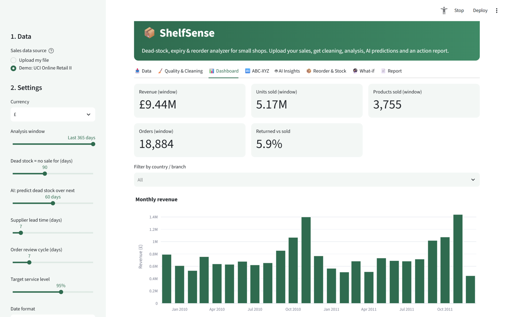
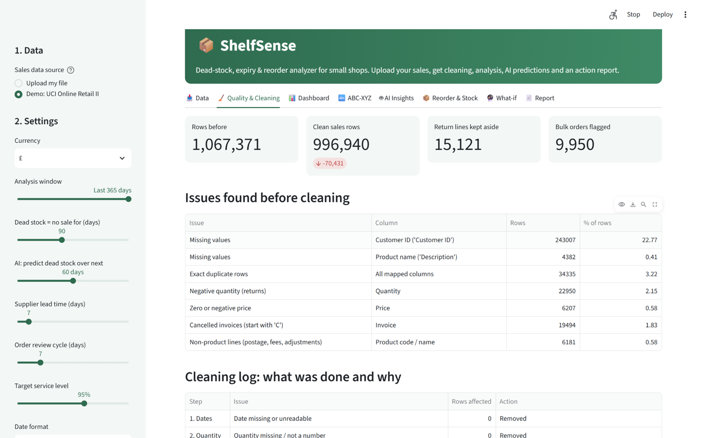
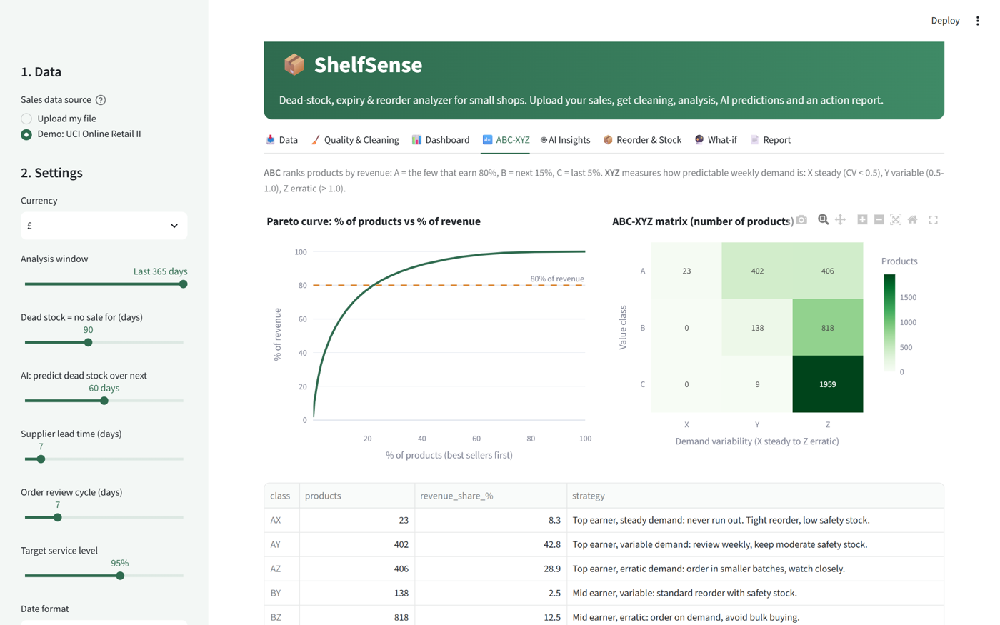
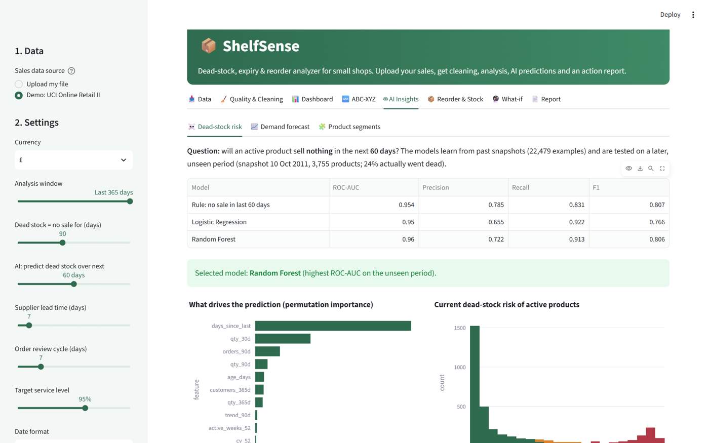
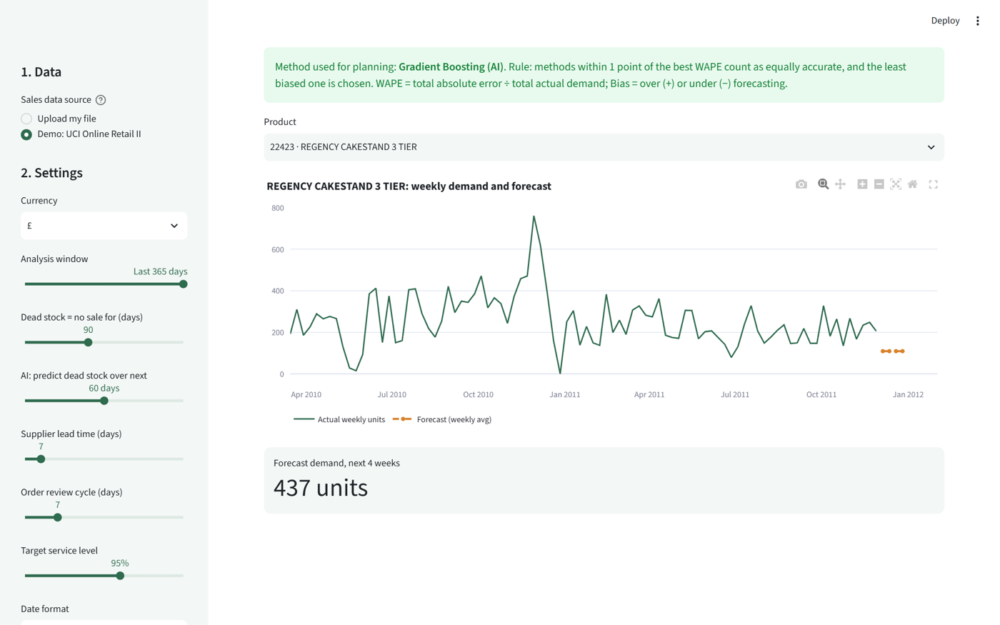
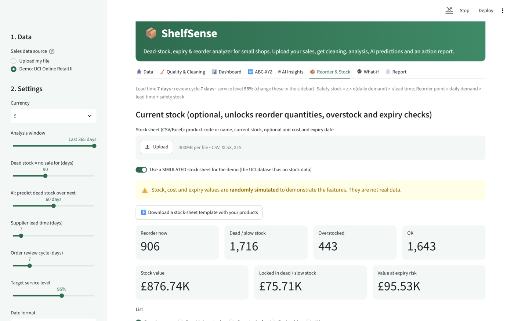

Stop guessing what to reorder.
ShelfSense turns a small shop's ordinary sales file into clear decisions: what to reorder, what to discount and what to stop stocking. It combines data cleaning and analytics with machine learning, in an interactive web app.

The problem
Kirana stores, pharmacies and small retailers lose money three ways: stock that never sells, stock that expires, and their best products running out. Big retailers have analytics teams to prevent this. Small shops reorder by guesswork, even though their billing software already records every sale.
What it does
Works with any shop's CSV or Excel file: columns are detected automatically (e.g. Bill No, Item Name, Qty, Rate), with support for ₹ prices and DD/MM/YYYY dates.
Data quality & cleaning
Finds duplicates, returns, cancelled orders, fee lines and bad prices, and logs every fix and why.
Sales dashboard
KPIs, monthly trends, top products, busiest days and hours, returns.
ABC-XYZ analysis
Which few products earn 80% of revenue, and how predictable their demand is.
AI dead-stock risk
Random Forest predicts which products will sell nothing in the next 30–90 days.
AI demand forecast
Gradient Boosting forecasts next-4-week demand, tested against simple methods.
Reorder & expiry plan
Safety stock, reorder points, overstock and expiry-risk lists with suggested actions.
What-if simulator
Change demand, lead time or service level and see the effect instantly.
Downloadable reports
HTML report, Excel workbook and cleaned data in one click.
Tested on real data
Built and evaluated on the UCI Online Retail II dataset: 1,067,371 real transactions of a UK giftware retailer (Dec 2009 – Dec 2011, CC BY 4.0). Every number below was produced by the project code.
Dead-stock prediction (next 60 days)
| Model | ROC-AUC | Recall | F1 |
|---|---|---|---|
| Rule: no sale in 60 days | 0.954 | 0.831 | 0.807 |
| Logistic Regression | 0.950 | 0.922 | 0.766 |
| Random Forest ✓ | 0.960 | 0.913 | 0.806 |
4-week demand forecast
| Method | WAPE % | Bias % |
|---|---|---|
| Naive (last 4 weeks) | 42.17 | −9.51 |
| Moving average (12 wk) | 47.27 | −18.55 |
| Seasonal naive | 63.69 | +19.52 |
| Gradient Boosting ✓ | 42.29 | −0.79 |
Honest takeaway: recency alone is a strong signal. The AI adds value by catching more products that are really going dead (recall 0.91 vs 0.83) and by removing the systematic under-forecasting that causes stock-outs.
Inside the app
Eight tabs take a shopkeeper from raw file to action list.





Built with
Runs entirely on free, open-source tools. No paid AI APIs; when run locally, no data leaves the computer. Supports UN SDG 12: Responsible Consumption and Production.
About the project
Built by Vanshika Solanki, BCA student at Sri Balaji University, Pune, for the IBM SkillsBuild Data Analytics with AI Internship 2026, offered by BharatCares in association with AICTE.